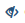

帮助中心
知识库管理
业务知识
添加问题

名词解释：
- 标准问题：在添加问题的页面，标题为“问题”的输入框内容称为标准问题，标准问题不能相同
- 相似问法：与标准问题表达的意思相同的称为相似问法，一个标准问题下面可以添加N条相似问法
- 生效规则：答案展示给访客需要遵循的一些条件
- 智能推荐：当访客咨询到某个问题时，机器人给出答案的同时会推荐其他的问题供访客咨询
操作说明：
- 添加问题需要尽可能的简洁明了，语气词（呀、啊、呢等）可以省略
- 在问题输入框后面可以添加该问题的相似问法，相似问法越多机器人回答问题的效果越好
- 答案有
4种模式，分别为纯文本（全部是文字信息）、富文本（可以设置答案的字体、颜色、超链接、上传图片、附件等）、图文（展示图文信息）、语音 - 如果需要答案在某个时间段只在微信上面生效，可以在生效规则里面设置相应的规则
- 智能推荐有
3种模式，分别为关闭（机器人关闭这项功能不给推荐），智能推荐（机器人给出问了这个问题的其他访客还问了哪些问题），手动设置（管理员手动设置希望访客看到的内容）
创建流程
流程指的是，根据访客的问题，将某个复杂的知识或者操作分解为若干个流程，机器人会引导访客一步步地按照流程去解决问题！
名词解释：
- 流程子项目：一个总的流程是由若干个附属的子项目组成的，我们要做的就是要添加这些子项目
- 引导性子项目：引导性流程流程指的是从这个子项目可以引导出其它流程子项目，即还没有结束总流程，内容一般为引导性问题
- 封闭性子项目：封闭性流程子项目指的是内容为解答型陈述，引不出其他流程子项目，即到此整个流程就结束了
操作说明：
问答总览
问答总览展示了后台添加的所有问题的详细信息，方便管理员直接查看每个问题及其答案，并可直接对问题和答案进行编辑。
操作说明：
- 点击“添加问题”按钮进入添加问题的页面
- 点击“移动问题分类”可批量修改问题的所属分类
- 点击“导入”进入问题导入页面，点击“导出”将当前业务库中的所有知识都通过execl导出来
- 点击“默认排序”可以根据问题的添加时间、浏览次数、当前状态进行查看
- 点击“问题和流程”可筛选出所有的问题或者所有的流程问题
点击问题/流程，可进入问题/流程详细页面，在详细页面可查看更详细的信息，并对这些信息进行编辑等操作
问题分类
问题分类是创建知识的基础，不建分类无法创建知识
操作说明：
问题分类有如下操作，按照上图的图标顺序进行描述
- 新增分类：点击按钮 可创建新的分类，需要注意如果父节点已存在问题，则该节点下不能再创建分类了；分类节点最多创建5级
- 修改分类：点击按钮 可以修改分类名称
- 导出问题：点击按钮 可将该分类下面的所有问题通过execl导出
- 导出流程：点击按钮 可将该分类下面的所有流程通过execl导出
- 清空问题：点击按钮 可将该分类下面的所有问题和流程全部删除
问题导入
问题导入支持纯文本录入，默认每次最多支持200条同时导入
操作说明：
- 点击“清空列表”即清空当前页面的所有问题，不会删除已存在业务库里面的问题，相当于“清屏”的操作
- 点击“删除问题”即将业务库里面的问题删除
- 点击“默认排序”可根据问题导入状态、问题内容、分组来筛选数据
友情提示：导入问题必须按照模板的格式导入否则会导入失败，答案中不能含有字体样式，附件等
知识学习
知识学习是根据机器人聊天的问题检测出来的，一般机器人聊天时遇到回答不了的问题就会反馈到知识学习里面
智能学习
智能学习指访客咨询一个问题，机器人给出其他问题的引导并且访客点击了其中一个问题，机器人会认为这个问题有可能是访客想要咨询的问题，会将这个问题归到智能学习中
操作说明：
- 智能学习列表展示的问题都是业务库已存在的标准问题，点击问题进入智能学习详细页面可查看该问题下面详细的待学习的问题（访客提出的问题）
- 查看聊天记录：点击按钮 查看该访客与机器人的聊天记录
- 通过：点击按钮
 此问题会进入当前标准问题下面的相似问法中
此问题会进入当前标准问题下面的相似问法中 - 编辑通过：点击按钮 此问题经过编辑之后会进入当前标准问题下面的相似问法中
- 回答：点击按钮 可为该问题重新设置答案，答案有
3种模式，分别为已有答案回答（用业务库中已经存在的答案回答），编辑答案回答（设置新的答案，不从业务库中查询），相似问题答案回答（在业务库查询与此问题表达意思相同的问题来回答）答案设置完成后，有
2种回答模式，分别为仅回答和回答并学习- 仅回答：经过此操作的问题不进入业务库，只针对提出这个问题的访客生效，且只生效一次。即访客第一次提出这个问题，管理员在后台处理后访客第二次再提出这个问题会给出管理员给的回复，第三次再问同第一次提问的效果
- 回答并学习：经过此操作的问题进入业务库，如果使用已有答案回答和相似问题答案回答此问题会进入选中答案的相似问法中，如果使用编辑答案回答会作为一个标准问题进入业务库
- 在智能学习列表中可以根据问题内容和问题出现的时间进行筛选

未知问题
未知问题指访客咨询一个问题，机器人未直接给出答案。
产生未知问题有两种方式：一是机器人给出问题引导，但是访客没有点击，二是直接给出未知说辞
名词解释：
- 忽略：对某个问题不进行任何处理，通常这样的问题对于知识来说是没有意义的
- 永久忽略：对某个问题永久的不处理，本次将该问题标记为永久忽略后，再有访客问到，该问题将不会再进入未知问题列表
- 忽略相同：对未知问题列表中相同的问题批量的忽略掉
操作说明：
- 点击“批量处理”按钮，可进行批量忽略（将多个问题批量忽略掉）、批量永久忽略、合并回答（批量对问题进行回答，回答同智能学习的回答）操作
- 点击“导出execl”按钮，可以导出当前未知问题列表中的所有问题，导出已处理未知问题的操作类型（忽略、回答等操作）
- 在未知问题列表中可以根据未知问题的内容和未知问题出现的时间进行筛选
- 查看聊天记录、回答同智能学习
- 移动分类：点击按钮 可将当前问题设置到某个分类下面去
- 忽略：点击按钮  可将当前问题删除掉
- 忽略相同：点击按钮
 可将于当前问题相同的一并忽略掉
可将于当前问题相同的一并忽略掉 - 永久忽略：点击按钮 当前问题将不会再进入未知问题列表
永久忽略
未知问题中经过永久忽略处理的问题将会进入永久忽略列表，在永久忽略列表中可对这些问题进行禁用、开启、删除操作
语义知识
同义词
添加同义词可提高机器人的智能性，同时方便管理员维护后台的业务库，减少相似问法的添加。如：管理员在后台添加一个问题“机器人的价格”，管理员在后台将价格设置同义词收费、多少钱，当有访客咨询“机器人怎么收费”，机器人会给出“机器人的价格”的答案
操作说明：
- 单个同义词字符在1-10之间
- 批量导入同义词需要先下载模板
- 可根据关键词搜索同义词
- 可对同义词进行批量删除
专业名词
是指有行业特征性的词语。如小米和小米2指的是两件商品，将小米2作为专业名词添加，机器人在语义分析的过程中就会将小米2作为一个整体，不会将它分为小米和2两个部分了
操作说明：
- 单个专业名词字符在1-10之间
- 批量导入专业名词需要先下载模板
- 可根据关键词搜索专业名词
- 可对专业名词进行批量删除
聊天库
聊天库与业务库没有关系。聊天库可增加机器人的有趣性，如“你好”，“你好你好呀，欢迎你来看我”，“你是谁”，“我是超级无敌萌的小云”
操作说明：
- 问题导入之前需要先下载导入模板
- 可根据问题和答案进行搜索
停止词
停止词指的是在业务问题语义分析的时候无意义或与您业务完全无关的词语，如“啊”、“呢”，“怎么”等，在访客提出的问题中会将这些停止词过滤掉
- 添加停止词和批量删除停止词
- 对停止词进行修改删除操作
素材管理
自定义菜单
使用自定义菜单需要先与公众号进行对接，获取微信公众号的授权后可以在后台设置菜单内容
操作说明：
- 选中当前需要编辑的公众号，设置对应的菜单名称以及点击菜单需要触发的动作
- 菜单内容有
2种模式分别为：发送消息（点击菜单直接发送文字信息）和跳转网页（点击菜单跳转到相应的网页地址去） - 发送消息有
5种模式分别为：文本（可输入文字信息和微信表情）、图文消息、图片、语音、答案（业务库中创建的答案） - 菜单添加完成后，点击预览可查看到菜单在手机上面展示的样式
添加素材
操作说明：
- 素材有100MB的空间
- 素材可以支持上传图片(单次最多上传10张图片，单张图片最大1000kb)、语音（单个视频最大2000kb）、视频（单个视频10000kb）、文档（5000kb）等其他的一些文件类型
图文列表
操作说明：
系统管理
个性化设置
页面展示配置
页面展示配置可以设置在聊天页面中展示常见问题、热点问题、推荐咨询、配置标签功能
操作说明：
- 设置热点问题和常见问题
- 开启手动模式管理员可在后台自己设置热点和常见问题，关闭手动，机器人自己去计算匹配
- 热点和常见问题最多可设置10个问题
- 配置快捷服务
点击图标可跳转到相应的链接地址
- 快捷服务最多可设置6个
- 推荐资讯
点击图片或者文字可跳转到相应的链接地址
- 推荐咨询最多可设置5个
推荐资讯设置的时候建议如果是文字资讯就全部是文字不要混合图片资讯
- 推荐咨询最多可设置5个
机器人设置
在机器人设置页面中可以设置机器人的名称，机器人聊天页面的logo、机器人的欢迎词（一进入聊天页面机器人给访客的提示话语）、机器人的未知说辞（当机器人未出未知回复的话语）

操作说明：
- 可以设置不同渠道的机器人的欢迎词和未知说辞不同
功能配置
功能配置是机器人问答过程中的辅助功能，可以开启机器人聊天模式、查公交、查天气等功能
基本设置
获取代码
获取代码指的是通过选择机器人入口图标、聊天页面的皮肤、页面展示的位置生成一段代码，管理员将这段代码嵌到官网中就可以使用机器人了
操作说明：
- 机器人入口图标
- 链接式：最多输入200个字符，支持富文本样式
- 图标式：图标固定在页面的某个位置，跟随页面滚动条滚动
- 浮窗式：图标固定的显示屏的某个位置，不随页面滚动条滚动
- 自定义：管理员根据自己网站风格和要求自定义上传入口图标，还可以自定义机器人和访客的头像
-
机器人聊天皮肤
- 根据应用的平台选择相应渠道（PC端、微信、App）的聊天皮肤
- 设置图标在页面中的显示位置
- 点击按钮“生成代码”即可，将代码复制在网页
<body>和</body>之间的任意位置就可以使用机器人功能了
操作日志
意见反馈
访客在聊天页面对机器人本次会话的评价内容会反馈到本列表中
数据分析
数据分析中的报表可根据访客渠道（PC端、微信、APP等）、时间段（最近12小时，最近24小时，最近7天等）、精确时间等进行查询或者导出execl
平台对接
认证列表/接口列表
操作说明：
- 点击按钮“添加第三方认证/添加第三方接口”可添加认证/接口的相关信息
- 认证/接口的状态：关闭（此项认证不启用），开启（此项认证启用）
- 认证/接口的认证方式：不强制认证（认证失败也可与机器人进行交互），强制认证（如果认证失败不可与机器人交互）
- 来源：PC端、微信、APP等，选择哪个来源此项认证/接口就在哪个渠道生效
友情提示：第三方认证与第三方接口属于技术人员操作，如果需要特有认证请与管理员沟通
对接微信
操作说明：

{kind=link}
{kind=link}
{kind=link}
{kind=link}
{kind=link}
{kind=link}
{kind=link}
{kind=link}
{kind=link}
{kind=link}
{kind=link}
{kind=link}
{kind=link}
{kind=link}
{kind=link}
{kind=link}
{kind=link}
{kind=link}
{kind=link}
{kind=link}
{kind=link}
{kind=link}
{kind=link}
{kind=link}
{kind=link}
{kind=link}
{kind=link}
{kind=link}
{kind=link}
{kind=link}
{kind=link}
{kind=link}
人员管理
访客管理
访客日志
在访客日志页面可以查看到访客与机器人的聊天记录，同时可以通过渠道、满意度、访客类型来对访客日志进行筛选
{kind=link}
操作说明：
- 点击按钮“全部渠道”可以筛选来自不同渠道的访客
- 点击按钮“全部会话”可以筛选出有效会话的访客
- 点击按钮“全部满意度”可以筛选评价满意或者不满意的访客
- 点击按钮“全部访客”可以筛选出老访客和新访客的数据
- 可以通过访客访问的时间进行筛选数据
客服管理
用户列表
在用户列表中可以创建其他子账户
{kind=link}
操作说明：
- 点击按钮“添加用户”可创建新用户
- 点击按钮“导出Execl”可将当前所有的用户通过execl导出
- 在列表的操作一列中可以对当前用户进行编辑、重置密码、删除操作
权限管理
角色管理
在角色管理页面可以设置角色信息，在创建用户的时候可以为每个用户赋予不同的角色
{kind=link}
操作说明：
- 创建角色的时候只需要将对应权限的名称勾选上即可